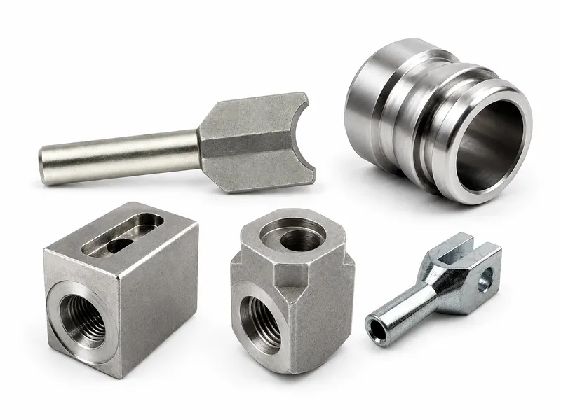
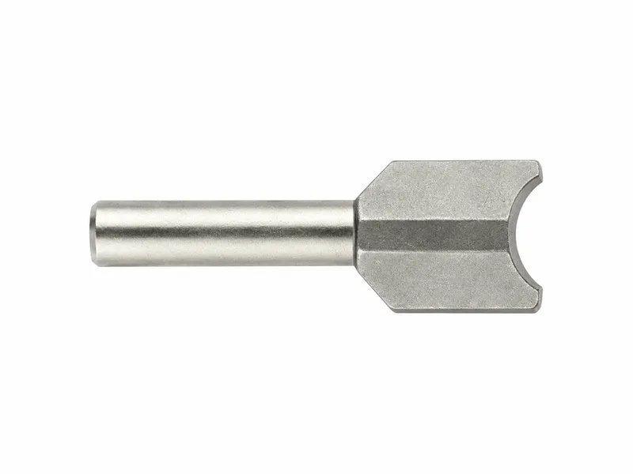
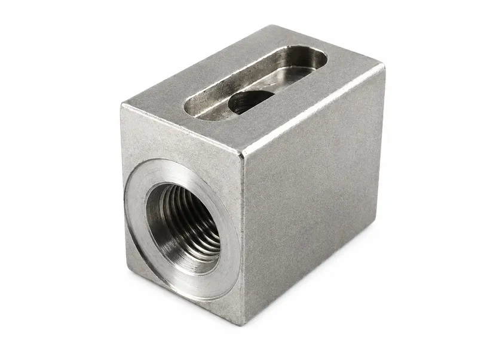
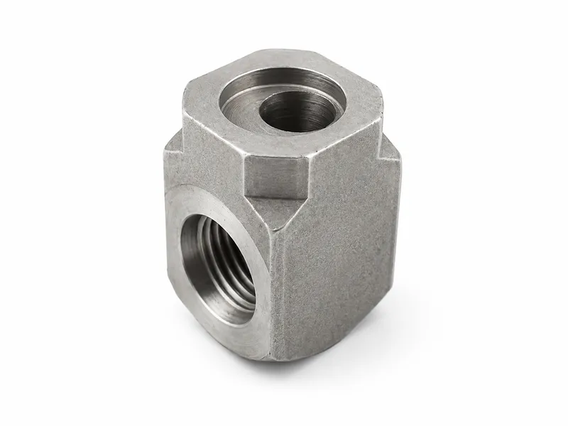
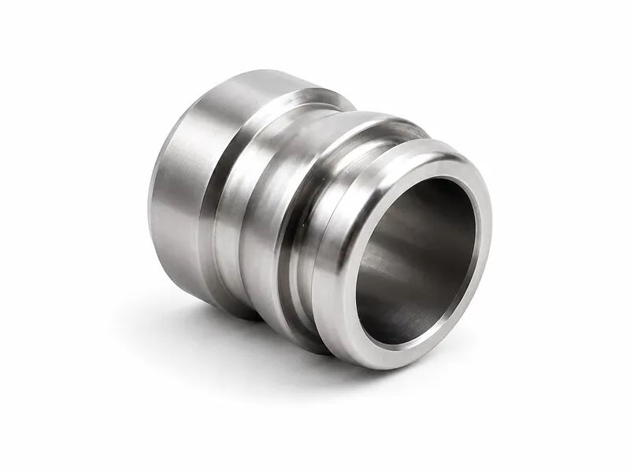

Custom CNC





Custom CNC parts are precision-machined metal components manufactured according to drawings, samples or functional requirements. They can include hydraulic fittings, valve components, shafts, bushings, pistons, threaded connectors, brackets and special-shaped parts. CNC turning, milling, drilling, tapping, grinding and surface treatment allow the parts to meet dimensional, functional and appearance requirements. Custom CNC parts are suitable for hydraulic equipment, machinery manufacturing, automotive components, industrial automation and replacement projects that require accurate and repeatable production.
| Product Type | custom CNC parts, precision machined components and non-standard metal parts |
| Machining Process | CNC turning, milling, drilling, tapping, boring, grinding and deburring |
| Material Options | carbon steel, stainless steel, alloy steel, aluminum, brass or bronze |
| Part Types | fittings, shafts, bushings, sleeves, pistons, valve parts, brackets and adapters |
| Surface Finish | zinc plating, nickel plating, black oxide, anodizing, polishing or passivation |
| Tolerance Level | controlled according to drawing requirements and functional fit needs |
| Quantity Support | prototype samples, small batches and repeated production orders available |
| Input Files | 2D drawings, 3D models, physical samples or specification descriptions |
| Inspection Items | dimensions, threads, surface roughness, hardness and appearance quality |
| Customization | material, shape, thread, hole position, surface finish and packaging can be customized |
Custom CNC manufacturing supports parts that standard catalog components cannot satisfy
Precision machining improves dimensional accuracy, repeatability and assembly compatibility
Flexible material selection allows the part to match strength, weight and corrosion requirements
Multiple machining processes can be combined to produce complex shapes and special features
Threaded holes, grooves, flats, steps and radial ports can be produced according to drawings
Surface treatment improves wear resistance, corrosion resistance and product appearance
Prototype sampling helps verify dimensions before moving to batch production
Stable production process supports consistent quality for OEM supply chains
Inspection can be arranged according to critical dimensions and functional surfaces
Custom packaging helps protect precision machined parts during transport and storage
Engineering review can improve manufacturability and reduce unnecessary machining cost
Suitable for both hydraulic industry parts and general machinery components
Reverse engineering support can help reproduce old or discontinued parts when original drawings are unavailable.
Process planning can combine turning, milling and grinding to reduce setup error and improve final accuracy.
Clear material traceability and inspection records can be provided for projects with stricter quality requirements.
Custom CNC parts cover a wide range of drawing-based components, including hydraulic adapters, valve bodies, manifold blocks, threaded fittings, bushings, sleeves, shafts, pistons, valve spools, mounting parts and special machined components. These CNC machined parts are commonly used in hydraulic equipment, construction machinery, agricultural machinery, industrial machines, vehicle systems and OEM equipment assemblies where standard parts cannot meet the required fit, connection or function.
Custom CNC parts may require CNC turning, CNC milling, drilling, tapping, boring, grooving, chamfering and deburring depending on the part geometry and drawing requirements. Turning is suitable for round parts such as shafts, bushings, pistons and threaded fittings, while milling is suitable for blocks, flats, ports, slots, mounting surfaces and complex profiles. Selecting the correct precision CNC machining process helps improve dimensional accuracy, repeatability and production consistency.
Many custom hydraulic components require accurate threads, bores, sealing faces, O-ring grooves, chamfers and mating surfaces. Thread accuracy, bore concentricity, sealing surface flatness, groove dimensions, burr control and edge quality all affect assembly and sealing performance. These details are especially important for hydraulic fittings, valve bodies, manifold blocks and cylinder components that must connect reliably with other hydraulic system parts.
Common material choices for OEM machined components include carbon steel, alloy steel, stainless steel, aluminum, brass and customer-specified materials selected according to strength, corrosion resistance, weight, wear resistance and the application environment. Suitable surface treatment options may include trivalent zinc plating, zinc nickel plating, black oxide, anodizing, phosphating, polishing, hard chrome plating or customer-specified finishes where appropriate. Material and surface treatment should be matched to pressure, corrosion exposure, wear conditions and equipment operating environment.
To support accurate quotation and manufacturing planning, buyers should provide drawings, samples, 3D models, material requirements, tolerance requirements, thread standards, surface finish requirements, quantity range and application information where available. Clear technical information helps reduce communication errors, confirms the machining route earlier and makes it easier to review critical dimensions before production of custom CNC parts begins.
Custom CNC machined parts require careful inspection of key dimensions, threads, bores, sealing surfaces, grooves, hole positions, surface roughness and appearance. In-process inspection and final dimensional checks help confirm that the finished parts match customer drawings or samples. For drawing-based components, inspection focus should be placed on the surfaces and features that affect assembly, sealing, movement and installation.
Wei Xing Machinery can support custom CNC machined hydraulic components based on drawings, samples and application requirements. Typical parts include hydraulic fittings, adapters, valve bodies, manifold blocks, cylinder parts, valve spools, pistons and other precision machined components for OEM hydraulic equipment applications. These CNC machined hydraulic fittings and related components can be developed around the required material, thread, sealing and installation conditions.
Can these custom CNC parts be customized according to drawings?
Yes. Wei Xing Machinery can manufacture Custom CNC Parts and related CNC components according to drawings, samples, material requirements and surface finish needs.
What should be confirmed for the drawing-based machining?
Please confirm the required drawing-based machining, size, working pressure, material grade and application environment before ordering.
What materials are available?
Common options include carbon steel, stainless steel, aluminum, brass or ductile iron depending on the product type and working environment.
What surface treatments can be supplied?
Available finishes may include trivalent zinc plating, zinc nickel plating, black oxide, polishing or other customer-specified treatments.
Tell us your requirements and we'll provide a detailed quote within 24 hours.